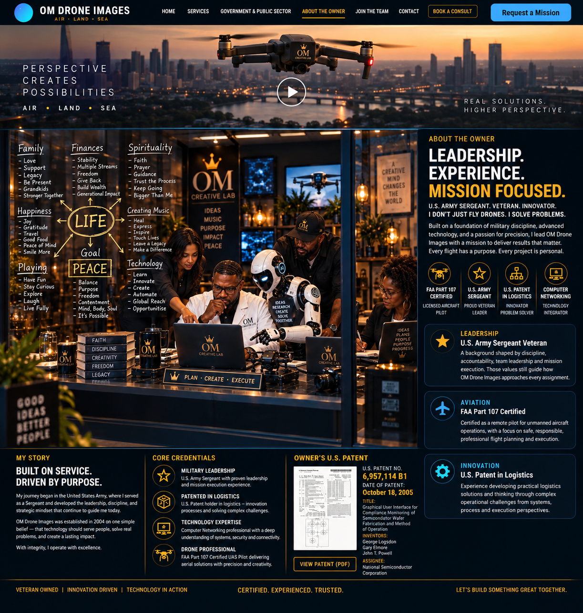

Leadership, aviation, innovation and technology behind OM Drone Images.
OM Drone Images is led by John T. Powell — FAA Part 107 certified Unmanned Aircraft Pilot, U.S. Army Sergeant veteran, logistics innovator, and technology professional with a background in computer networking.

A background shaped by discipline, accountability, team leadership and mission execution. Those values still guide how OM Drone Images approaches every assignment.
Certified as a remote pilot for unmanned aircraft operations, with a focus on safe, responsible, professional flight planning and execution.
Experience developing practical logistics solutions and thinking through complex operational challenges from systems, process and execution perspectives.
Technology experience adds a systems-level view to imaging, connectivity, digital delivery and modern operational problem solving.
OM Drone Images was established in 2004 with a simple belief: technology should create real value. Whether the assignment is large or small, the standard is the same — lead with integrity, prepare with discipline, execute with precision, and leave the client with something worth remembering.